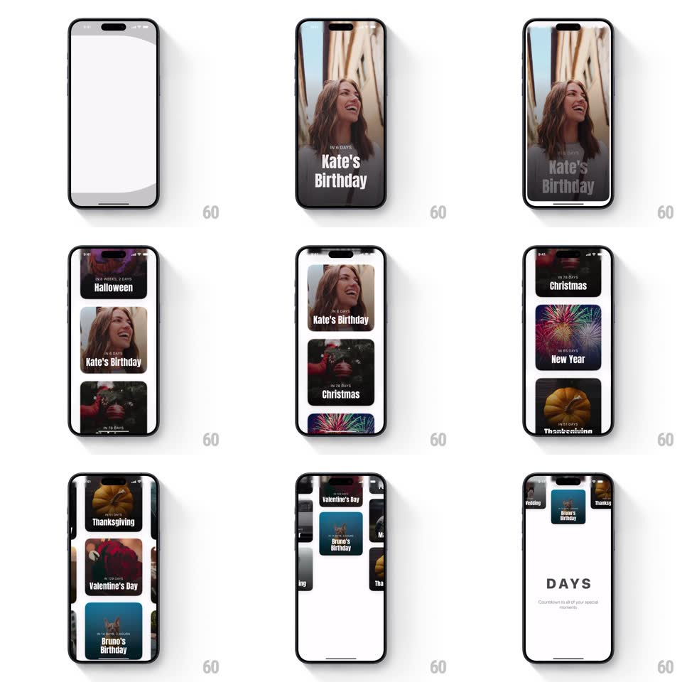

Media
Frame-by-frame

Rebuild this interaction 1:1: the Days app intro - the "D" logo zooms out of a full-screen card, then the view transitions into an auto-scrolling vertical showcase of event countdown cards (Kate's Birthday, Halloween, Christmas, New Year, Thanksgiving, Valentine's Day) before settling on the DAYS wordmark.

Rebuild this interaction 1:1: the Days app intro - the "D" logo zooms out of a full-screen card, then the view transitions into an auto-scrolling vertical showcase of event countdown cards (Kate's Birthday, Halloween, Christmas, New Year, Thanksgiving, Valentine's Day) before settling on the DAYS wordmark.
## Integration
Integration: stack-agnostic spec - springs given as stiffness/damping, timed motions as duration + curve; map every value to your framework and animation library of choice.
## Scene
White splash with the black "D" mark; a full-screen photo countdown card ("Kate's Birthday, IN 6 DAYS"); a scrolling stack of event cards; final white screen with the gray "DAYS" wordmark and tagline.
## Motion spec
Pattern: logo zoom into auto-scrolling card showcase.
- The "D" holds ~500ms, then zooms (scale 1 -> 8, 600ms, ease-in) until it fills and exits the frame, revealing the first full-screen card.
- The card stack auto-scrolls vertically (~40px/s, continuous), cards drifting up past the viewport, each a full-bleed photo with the countdown and name overlaid.
- The scroll decelerates (ease-out, last 800ms) and the final frame crossfades (300ms) to the DAYS wordmark, which fades in letterspaced with the tagline below.
## Calibration
- The showcase scroll is automatic - no user input; the user watches.
- Cards maintain their overlay text position while scrolling (text rides with its card).
## Reduced motion
Logo crossfades to a static grid of cards (250ms), then to the wordmark.
## Don't miss
- The zoom uses the D's own shape as the reveal - the card appears through/behind the letterform.
- The wordmark is gray on white, quiet after the loud showcase.